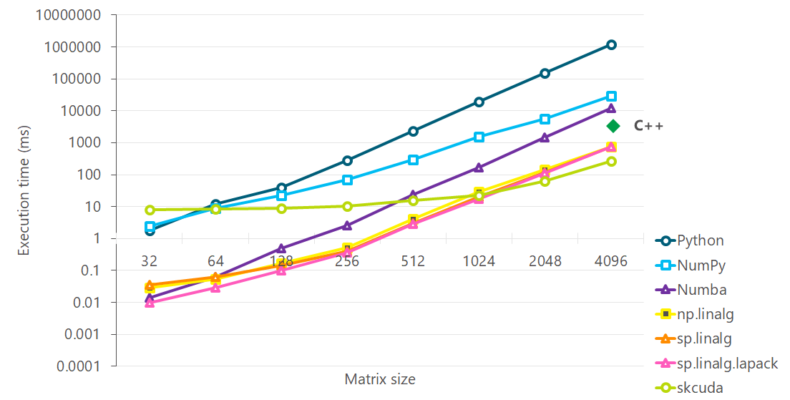

Optimizing Python¶
Benchmarks were taken on an Intel Xeon E5 processor (Windows 10). Intallation instructions refer to Windows environment as well, but they are pretty similar for Linux. This has been tested on Linux and WSL as well. We used Python 3.6 distribution from Anaconda (which includes MKL). All LAPACK and BLAS references are references BLAS and LAPACK from Intel MKL, included in Anaconda. All code used in these examples is available at optimization_examples Github repo. For scikit-cuda, we used the example code from the documentation.
Profiling¶
In order to get a good understanding of the performance bottlenecks, one can use any of Python’s standard profiling tools, but most of them only time function calls. If the slow functions are large, then it is helpful to to get a good idea of which lines the time is being spent in. A good utility for getting line by line timing is line_profiler. Use pip install line_profiler to install it. Add an @profile decorator to the functions you want to profile. Then use kernprof -l -v script.py to see results of running profiling on script.py. The output will look like this:
Line # Hits Time Per Hit % Time Line Contents
==============================================================
19 @profile
20 def approxMagnitude(x, y):
21 1 13.0 13.0 65.0 small = min(x, y)
22 1 4.0 4.0 20.0 big = max(x, y)
23 1 3.0 3.0 15.0 return 0.414 * small + big
After profiling it’s worth thinking about whether the time is spent in places you expect it to be spent, i.e. at the heart of your computation. If not, then some simple refactoring could speed the code up. It’s also worth thinking about data layout and cache friendliness at this point.
Numba¶
Numba is a type-specialising JIT compiler for Python, powered by LLVM. Numba uses Python byte code and type information to produce machine code using LLVM. To get the best optimization performance out of Numba, you will want to use the following options:
@numba.jit('(float64[:, :], float64[:, :])',nopython=True, nogil=True, parallel=True)
nopython=True causes the compiler to fail hard if a numba can’t vectorize a line of code and avoids the compiler from falling back to Python silently. This is useful for making sure that all of your code is being vectorized. Often, it is possible to refactor the code slightly to allow the compiler to vectorize the code. nogil=True disables the dreaded Python global interpreter lock, and this is useful for taking advantage of multi-core processors. Since Numba deals with native types, not Python pbjects, the GIL can be safely released with the usual caveats of writing good multi-threaded code (i.e. programmer manages synchronization and race conditions). parallel=True enables automatic parallelization. In the current example, cache=True option which enables caching of the compiled function on disk gave the same performance as parallel=True and the two can’t be used together.
Another decorator @vectorize is useful for creating vectorized functions that perform pairwise operations on the elements of an array. An extended version @guvectorize allows operation over a subset of elements of an array. Note that, @vectorize or @guvectorize cannot be mixed with @numba.jit vectorization. It is best to try both and choose the one that suits your code the best and stick with it.
@numba.jitclass decorator allows entire classes to be JIT-compiled. A type specification of the members of the class needs to be provided; this allows the member data to be stored in C format, allowing member functions access to the raw data without having to go through the interpreter. This makes it more like C/C++. Without a background in C/C++, it can be hard to debug mistakes, especially as the interpreter support is limited in this mode, but it can be a boon for those who know C/C++ and want to bypass the interpreter. This is recommended in late stages of optimization when you have run out of all options and still want to stick with Python for the sake of readability.
There is also a @cfunc decorator that allows you to create C-compatible callbacks for Python functions. A few related things you may want to look up are @cuda.jit decorator and HPAT package.
Advantages of using Numba over C++/SIMD:
- Ease of use, saves effort
- JIT can optimize across module boundaries
A few things that Numba doesn’t do are:
- String manipulations
- Exception handling
LLVM provides a way to debug the vectorization performance of Numba. To enable this, add the following lines before the @numba.jit decorator.:
import llvmlite.binding as llvm
llvm.set_option('','--debug-only=loop-vectorize')
LLVM output shows the assembly generated for the code. This gives some useful pointers to understand what’s going on without having to learn assembly:
....
LV: Vector loop of width 2 costs: 14.
LV: Found an estimated cost of 0 for VF 4 For instruction: %sum.221 = phi double [ 0.000000e+00, %B58.lr.ph ], [ %.607, %B58 ]
LV: Found an estimated cost of 0 for VF 4 For instruction: %.378.020 = phi i64 [ %.239.024, %B58.lr.ph ], [ %.436, %B58 ]
LV: Found an estimated cost of 0 for VF 4 For instruction: %.376.019 = phi i64 [ 0, %B58.lr.ph ], [ %.440, %B58 ]
LV: Found an estimated cost of 1 for VF 4 For instruction: %.436 = add nsw i64 %.378.020, -1
LV: Found an estimated cost of 1 for VF 4 For instruction: %.440 = add nuw nsw i64 %.376.019, 1
LV: Found an estimated cost of 8 for VF 4 For instruction: %.522 = mul i64 %.376.019, %arg.cholesky.6.1
Note the following from LLVM documentation,:
The cost results are unit-less and the cost number represents the
throughput of the machine assuming that all loads hit the cache,
all branches are predicted, etc.
You may see, for example, statements like:
LV: We can vectorize this loop!
or
LV: Not vectorizing: loop did not meet vectorization requirements.
Having all loops vectorized may not lead to fastest code. For example, using fastmath=True forced LLVM to vectorize a loop, but led to slower code.
Analyzing performance of Cholesky decomposition¶
We chose Cholesky decomposition as the algorithm to do the comparison on because it is used in a wide variety of fields, is well understood, there are highly optimized versions of the algorithms available in every language to benchmark performance. Reasonably efficient implementations of Cholesky decomposition have been around for a while now, but efficient is a moving target in the face of ever-changing hardware baseline. This remains an active area of research [1].
We will use the A = L L^T variant of Cholesky decomposition because this variant is cache-friendly. Using A = LDL* avoids computing square roots, but includes an extra multiplication in an O(N^3) loop, whereas the square root occurs in a O(N) loop.
We will review the following variants of the same algorithm
- Python implementation
- NumPy implementation (uses Numpy matrices but does not use np.linalg package)
- Numba implementation
- numpy.linalg.cholesky
- scipy.linalg.cholesky
- scipy.linalg.lapack.cholesky
- scikit-cuda
We use numpy and scipy implementations to set ourselves a target, rather than to evaluate them. The aim here is to see how far we can go from a pure Python implementation to Numba one without putting in a lot of effort or sacrificing readbility of the code [2] .
{kind=link}
Conclusion¶
- If there is an optimized implementation available for your algorithm (such as scipy.linalg.lapack.cholesky), use that instead!
- Numba can get you pretty close to optimized algorithms with very little effort (if the algorithm lends itself to vectorization). This is useful when you want to optimize your code, not a standard linear algebra routine.
- While scikit-cuda provides a low effort route to harness the power of a GPU, a large fraction of the total time in scikit-cuda is spent in doing the data transfer to and from the GPU, so it’s worth minimizing the number of trips to the GPU and back. If it is not possible to chain operations in order to minimize the trips to GPU, then most likely you are better off sticking to scipy.linalg.lapack for standard routines. scipy.linalg.lapack seems to provide the best speed-effort tradeoff, especially at small matrix sizes.
Footnotes
| [1] | Cholesky Factorization on SIMD multi-core architectures Paper |
| [2] | If we have to sacrifice readability to such an extent that a new user cannot immediately comprehend the code, then we might as well write the code in a lower level language such as C/C++ and maximise speed gains. |